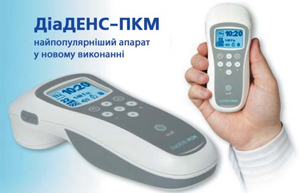
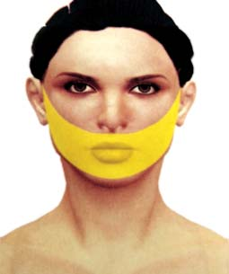
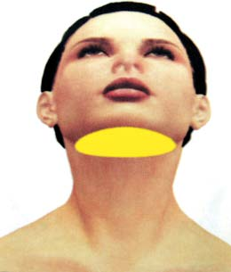
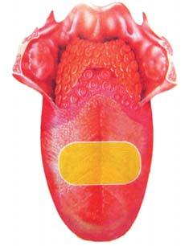
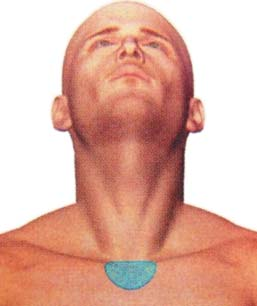
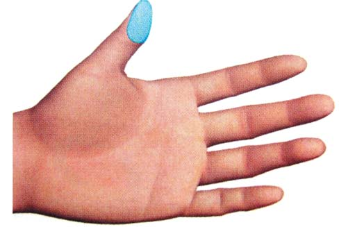
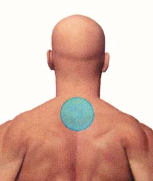
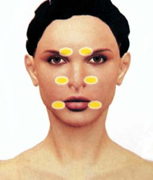

Наука · журнал «ДентАрт» 2015 №3
Застосування динамічної електронейростимуляції при захворюваннях тканин пародонту
APPLICATION OF THE DYNAMIC ELECTRONEUROSTIMULATION OF PARODENTIUM TISSUES DISEASES
Запально-дистрофічні процеси пародонту можна вважати одними з найпоширеніших захворювань людства. Фахівці ВООЗ вважають, що практично у 100% дорослого населення нашої планети зустрічаються ті чи інші ознаки цього захворювання.3 Серйозне занепокоєння викликає те, що захворювання пародонту на сьогодні у 90% випадків діагностуються у 13-17-річному віці.9, 12
Пародонтит виникає через сукупний вплив дуже багатьох чинників. Найчастішою причиною є травматизація (наприклад зубними коронками, пломбами, зубочистками). Також велике значення у розвитку захворювань тканин пародонту має інфекційний чинник. Значна кількість мікроорганізмів спостерігається в зубному нальоті, неретельне і нерегулярне видалення якого призводить до швидкого розмноження мікробів і їх токсичного впливу. При зниженні і порушенні імунітету мікрофлора ротової порожнини з умовно-патогенної стає патогенною і агресивною, викликає захворювання пародонту.4, 5 Також розвитку захворювання сприяють індивідуальні особливості прикусу, слиновиділення, склад слини та ін.
До інших причин розвитку захворювань пародонту фахівці відносять генетичну схильність, захворювання органів шлунково-кишкового тракту, ендокринної системи, порушення гормонального фону (пубертатний період, менопауза, вагітність), відсутність достатнього жувального навантаження, шкідливі звички (куріння), професійні шкідливості (робота з важкими металами), хронічний стрес, який є пусковим механізмом багатьох захворювань, тому що сприяє ослабленню загального та місцевого іммунітету.3, 4
При цьому у значної більшості хворих виражений больовий синдром.10 Поряд із постійним удосконаленням фармакотерапії стоматологічної патології, успіхи сучасної медицини у вирішенні патологічних проблем незаперечні, але маємо також усі недоліки лікарської терапії: відсутність зниження рівня захворюваності, зростання алергійних реакцій, пригнічення або втрату імунітету, порушення обміну речовин і дорожнечу пропонованого лікування. Тому пошук нових фізичних методів лікування, які значно підвищують ефективність і якість медичної допомоги хворим і не мають побічної дії, має велике значення.12
Серед величезного розмаїття фізичних факторів особлива увага звертається на імпульсні струми, які дозволяють отримувати якісно виразніші реакції у порівнянні з безперервним режимом генерації і значно зменшують енергетичне навантаження на пацієнта, що особливо важливо для ослабленого організму.1, 7
Пріоритетне використання у стоматології фізичних факторів низької інтенсивності, малої потужності, імпульсного режиму зумовлене передусім своєрідністю реакцій організму на дію методів фізіотерапії внаслідок високої чутливості нервової системи, більш вираженої інтенсивності обмінних і репаративних процесів, гарної гідрофільності шкірних покривів.2, 11
На один з таких методів — динамічної електронейростимуляції — в останні роки звертається особлива увага у зв'язку зі створенням нових удосконалених приладів, що дозволяють значно підвищити ефективність цього фізичного чинника. Діадинамічна електронейростимуляція (ДЕНС) — це метод немедикаментозного лікування, заснований на дії на рефлексогенні зони і акупунктурні точки імпульсами електричного струму, форма яких залежить від величини електричного опору поверхні шкіри у піделектродній ділянці. В основі лікувальної дії діадинамічної електронейростимуляції лежать рефлекторні механізми, які запускаються подразненням рецепторів у рефлексогенних зонах і акупунктурних точках. Виникає каскад реакцій організму у відповідь, відновлюються порушені зв'язки між трьома системами регуляції організму (нервовою, гормональною та імунною) і різними органами й тканинами, відбувається відновлення захисно-пристосувальних сил організму. Людина одужує.6

Апарат «ДіаДЕНС-ПКМ» — найпопулярніший апарат у новому виконанні.
Мета і завдання
Метою дослідження було наукове обґрунтування застосування динамічної електронейростимуляції за допомогою апарату Денас і вивчення терапевтичної ефективності цього методу при захворюваннях тканин пародонту. Під час роботи виявлялися особливості впливу діадинамічної електронейростимуляції на клінічний перебіг генералізованих пародонтитів різних ступенів тяжкості, вивчалися окремі аспекти формування лікувальної дії динамічної електронейростимуляції, вплив на стан вегетативної нервової системи, загальний аналіз крові.
Матеріали та методи
Для вирішення визначених завдань клінічні спостереження було проведено на базі стоматологічного відділення Дорожньої клінічної лікарні ст. Харків у 96 хворих віком від 18 до 55 років з генералізованим пародонтитом різних ступенів тяжкості, а 21 — склали контрольну групу з тією ж самою патологією (без фізіотерапії).
Обстеження хворих велося за загальноприйнятою схемою.
Для об'єктивної верифікації результатів у всіх пацієнтів застосовували спеціальні додаткові методи дослідження до і після курсу лікування. Низка моніторингових досліджень провадилася до і після кожної процедури протягом усього курсу лікування діадинамічною електронейростимуляцією. Використовувалися такі методи дослідження: моніторинг артеріального тиску, частоти серцевих скорочень, дослідження периферійної крові, мікробіологічне дослідження з порожнини рота, визначення індексів гігієни, РМА і проби Шиллера-Писарєва.
Комплексне лікування хворих складалося з видалення зубних відкладень, корекції неповноцінних пломб і протезів, санації порожнини рота, пришліфовування і шинування зубів за необхідності, місцевої антимікробної, протизапальної терапії пародонтальних кишень. Основній групі хворих одночасно проводили курс діадинамічної електронейростимуляційної терапії: один сеанс на день тривалістю 40-45 хвилин, щодня. При проведенні діадинамічної електронейростимуляції у хворих із захворюваннями пародонту використовувалася така методика.
Динамічна електронейростимуляція проводилася апаратом «ДіаДенс-ПКМ» у таких зонах впливу:8
- Шкірна проекція слизової оболонки порожнини рота, підщелепна зона.
- Зона язика. Мінімальний енергетичний рівень по 2-3 хвилини.
- Зона яремної ямки (проекція трахеї). 20 Гц по 5-7 хвилин.
- Зона відповідності на кистях (подушечка першої фаланги великого пальця на обох руках), по 3-5 хвилин на кожну зону.
- Зона 7-го шийного хребця: остистий відросток 7-го шийного хребця.
Вплив стабільний. При зональній обробці в основному використовувався режим «ТЕРАПІЯ» 20-60-77 Гц, застосовувався комфортний енергетичний рівень по 10-15 хвилин. При зменшенні болю додатково в рецептуру діадинамічної електронейростимуляції включалася обробка універсальної зони загальної дії — тригемінальної зони (точки виходу трійчастого нерва) в режимі «ТЕСТ» протягом 5 хвилин. Тривалість курсу 10-12 днів.







У пацієнтів, схильних до підвищеного тиску, всі впливи проводилися на мінімальному енергетичному рівні. Динамічну електронейростимуляцію апаратом Денас пацієнти витримували добре, побічних реакцій не відзначалося.
Результати
На підставі проведених досліджень виявлено сприятливий вплив діадинамічної електронейростимуляції на клінічні симптоми стоматологічної патології. Відразу став помітний ефект від дії, термін лікування скоротився майже вдвічі від звичайного. Уже в першу добу хворі основної групи відзначали припинення болю, на другу-третю добу — зникнення свербіння, зменшення виділень кишень, відсутність кровоточивості ясен. Нормалізувалися показники проби Шиллера-Писарєва, гігієнічного індексу. Зникли набряк і гіперемія ясен. Фізіологічною основою такого ефекту є, очевидно, виражена аналгезуюча, протизапальна та протинабрякова дія фактора на тканини пародонту і нормалізація процесів саморегуляції на центральному та периферійному рівнях. Мікробіологічне дослідження після курсу діадинамічної електронейростимуляційної терапії засвідчило зменшення кількості мікрофлори, зрушення видового складу у бік сапрофітов та аеробів.
Поліпшення клінічної симптоматики супроводжувалося позитивною динамікою показників периферійної крові. У 56,8% хворих відзначалися нормалізація лейкоцитарної формули, ШОЕ, зменшення загальної кількості лейкоцитів, що свідчило про протизапальну дію діадинамічної електронейростимуляції. У пацієнтів з обтяженим алергійним статусом після курсу діадинамічної електронейростимуляційної терапії спостерігалося достовірне зменшення еозинофілів — із 7,06 до 1,22, що свідчило про зниження вираженості алергійного процесу.
За даними моніторингу артеріального тиску та частоти серцевих скорочень, діадинамічна електронейростимуляція не мала несприятливого впливу на функціональний стан серцево-судинної системи: упродовж усього курсу лікування показники артеріального тиску і частота серцевих скорочень залишалися в межах вікових норм.
Стан пародонту у хворих контрольної групи після проведеного лікування також поліпшився, однак показники об'єктивного обстеження були значно нижчими.
Хворі основної групи, окрім повного клінічного благополуччя в пародонті, відзначали нормалізацію сну й апетиту, поліпшення загального самопочуття і настрою, підвищення працездатності. 85% хворих оцінювали діадинамічне електронейростимуляційне знеболення як добре, що дозволило їм знизити дозу болезаспокійливих препаратів або навіть відмовитися від їх застосування.
Хворих на генералізований пародонтит усіх ступенів обох груп запрошували на профілактичний огляд через 6 місяців після лікування. При проведенні повторного курсу значна більшість хворих надала перевагу діадинамічній електронейростимуляційній терапії перед хіміотерапевтичними методами.
Висновок
На підставі проведених досліджень доведено ефективність і доцільність застосування динамічної електронейростимуляції апаратом Денас у терапії захворювань пародонту. Ефективне діадинамічне електронейростимуляційне знеболення дозволило знизити дозу болезаспокійливих препаратів або навіть відмовитися від їх застосування. Встановлено протизапальну дію внаслідок значного поліпшення регіонального крово- і лімфообігу, обмінних процесів. У всіх випадках пацієнти добре витримували діадинамічну електронейростимуляціяю, ускладнень не зареєстровано. Абсолютне протипоказання для діадинамічної електронейростимуляційної терапії — наявність кардіостимулятора, а також індивідуальна непереносність електричного струму.
Таким чином, діадинамічна електронейростимуляція як у комплексі з іншими видами лікування, так і у вигляді окремого методу сприяє вираженій позитивній динаміці у хворих стоматологічного профілю, що дозволяє прискорити процеси одужання, знизити дози і кількість лікарських препаратів, які вживають хворі, зменшуючи фармакологічне навантаження на організм, і може з успіхом застосовуватися в клініці терапевтичної стоматології. Робота з приладом — дуже цікавий, творчий процес, який дає можливість індивідуалізувати лікування кожного пацієнта залежно від його соматичної обтяженості, особистісних особливостей, налагодити емоційний контакт, що сприяє оптимізації лікувального процесу, скороченню термінів лікування.
Література
- Аверьянова Н.И., Шипулина И.А. Основы физиотерапии: учебное пособие. – Изд. 2-е, доп. и перераб. – Ростов н/Д: Феникс, 2010. – 213 с.: ил.
- Антипова О.А., Михальченко Д.В., Порошин А.В., Яковлев А.Т., Михальченко В.Ф., Патрушева М.С. Немедикаментозный метод коррекции местного иммунитета при лечении больных хроническим генерализованным пародонтитом. – Вестник новых медицинских технологий. – 2010. – Т. ХVII. – № 1. – С. 118-119.
- Данилевський М.Ф., Борисенко А.В., Політун А.М., Сідельникова Л.Ф., Несін О.Ф. Терапевтична стоматологія. Захворювання пародонта. Т.3. – Київ: Медицина, 2010. – 544 с.
- Иванов В.С. Заболевания пародонта. – Москва: Медицинское информационное агентство, 1998. — 296 с.
- Ламонт Р.Дж. Микробиология и иммунология для стоматологов [пер. с англ.] / Под ред. Леонтьева В.К. – М.: Практическая медицина, 2010. – 504 с.
- Международная академия фундаментального образования. Руководство по динамической электронейростимуляции аппаратами ДиаДЕНС-Т и ДиаДЕНС-ДТ. – Под ред. В.В. Чернышева. – Екатеринбург, 2005. – 284 с.
- Мошков Н.Н. Основы информационной медицины (реферативный обзор). Часть I. – Калининград, 2007. – 128 с.
- Практическое руководство по динамической электронейростимуляции. Под общей редакцией С.Ю. Рявкина. Авторы: Рявкин С.Ю., Власов А.А., Николаева Н.Б., Сафронов А.А. – Екатеринбург, Токмас-Пресс, 2011. – 151 с.
- Хамитова Н.Х., Мамаева Е.В. Клиника, диагностика и лечение заболеваний пародонта в детском возрасте. – Казань: Медлитература, 2009. – 192 с.
- Avdeeva E.A. Effectiveness for dynamic trancutaneous analgetic electric stimulation of in complex treatment of traumatic neuritis for III branch of trigeminal nerve based on quantitativ indices for hyperemia area / E.A. Avdeeva, O.I. Pohodenko-Chudakova // International Congress in Medical Acupuncture. Thessaloniki. 2009. p. 146-147.
- Bazamy V. Troneurostimulation influence on reparative processes in tissues / V. Bazarny, A. Isaykin, I.Valamina, N. Krokhina, 0. Beresneva // 17th ESPRM European Congress of Physical and Reabilitation Medicin. Venice. 2010. p. 15-16.
- Svetlakova E. Dynamic electroneurostimulation in rehabilitation of patients with chronic periodontal diseases / E. Svetlakova, J. Mandra, N. Jegalina // 17th ESPRM European Congress of Physical and Reabilitation Medicin. Venice. 2010. p. 195-197.